CUSTOMER WORKSHOP · THU, NOV 5
Guessing where your customers come from?
Track it with Google Analytics
Count bookings and sign-ups on your Bolt.new site, then see which posts and ads bring them in.
Blake Arnsdorff · CX Enablement Lead, Bolt.new
WHY WE'RE HERE
The door counter and the receipt printer
Bolt.new's analytics is the door counter at a shop. It counts everyone who walks in, with nothing to install and no way to dodge it. GA4 is the receipt printer: it tells you who bought what, and which flyer brought them in. A good shop wants both.
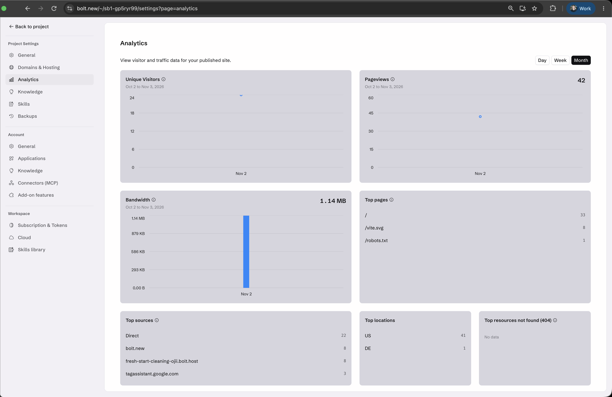
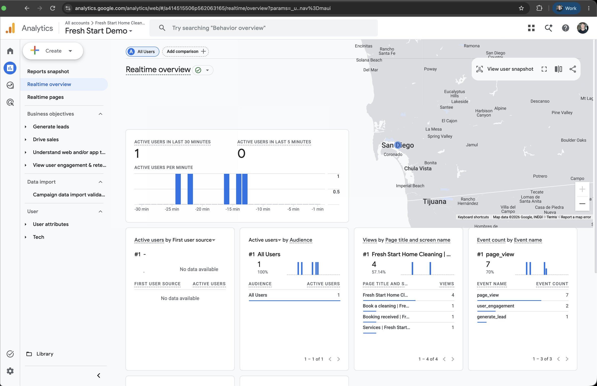
TODAY
What we'll build together
01CONNECT
GA4 on your Bolt.new site. One prompt installs it. No code.
02COUNT
Bookings and sign-ups as key events. GA4's name for the actions that bring you customers.
03CREDIT
Tagged links and five weekly numbers. See which posts and ads lead to bookings.
OUR DEMO SITE
Meet Fresh Start Home Cleaning
A fictional cleaning company built with one Bolt.new prompt. It has a booking form and a newsletter sign-up: the two actions we'll track.
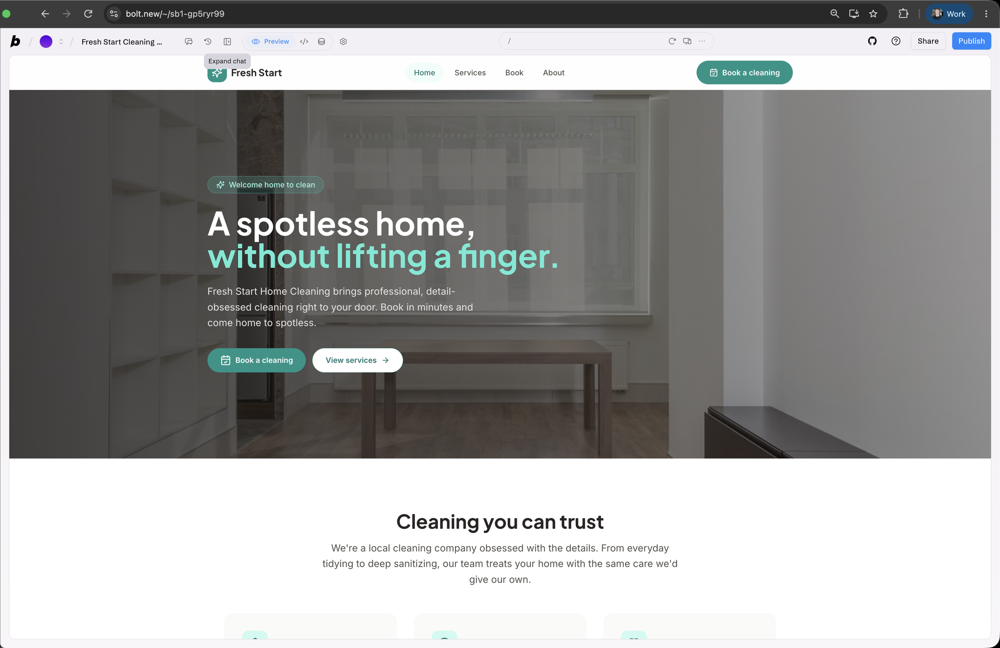
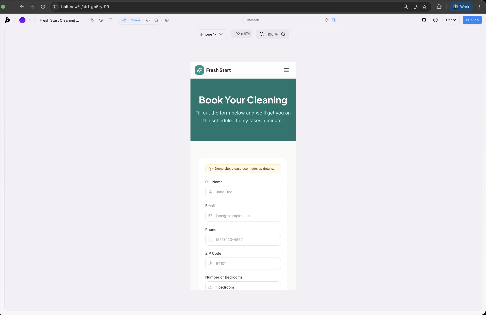
Your site works too, as long as it has a booking, contact or sign-up form.
NO SITE YET?
Build your own Fresh Start
No site with a form? Paste this into Bolt.new to build your own copy of the demo site, then follow along.
Build a simple, mobile-friendly website for a fictional home cleaning company called "Fresh Start Home Cleaning."
Use React Router so each page has its own URL, and give each page its own browser tab title (for example, "Book a cleaning | Fresh Start Home Cleaning"):
- Home (/): hero section, short intro, "Book a cleaning" button, three customer testimonials
- Services (/services): four services with starting prices: Standard Clean, Deep Clean, Move-In/Move-Out Clean, and Recurring Weekly Clean
- Book (/book): booking form
- About (/about): short story about the business
- Thank you (/thank-you): confirmation page
Booking form (id="booking-form"): name, email, phone, ZIP code, service (dropdown of the four services), number of bedrooms, preferred date, and a "Book my cleaning" button. All fields required. On successful submit, go to /thank-you.
Newsletter sign-up form (id="newsletter-form") in the footer on every page: one email field and a "Get cleaning tips" button. On submit, show an inline "Thanks for signing up!" message.
Show a small notice above both forms: "Demo site: please use made-up details." Don't save or send form data anywhere.
Include a header with navigation links to every page and a "Book a cleaning" button. Don't add any analytics or tracking code yet.Use Plan mode with the Max model: review the plan, then build.
WORDS YOU'LL SEE
Six terms, in plain English
- Account:
- the folder that holds your GA4 properties. Usually your business name.
- Property:
- where your reports live. One per website.
- Data stream:
- the connection between your website and the property.
- Measurement ID:
- the code starting with G- that tells your site where to send data.
- Key event:
- an action that brings you a customer, like a booking. GA4's word for a conversion.
- Tagged link:
- a normal link with labels on the end that tell GA4 where the visitor came from.
SET UP GA4 · 1 OF 7
Create your account and property
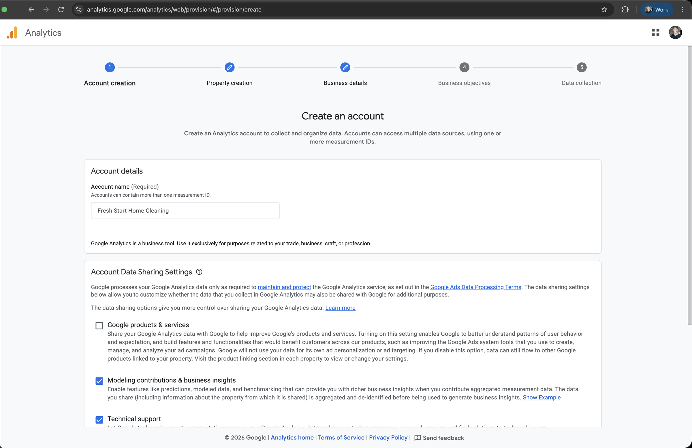
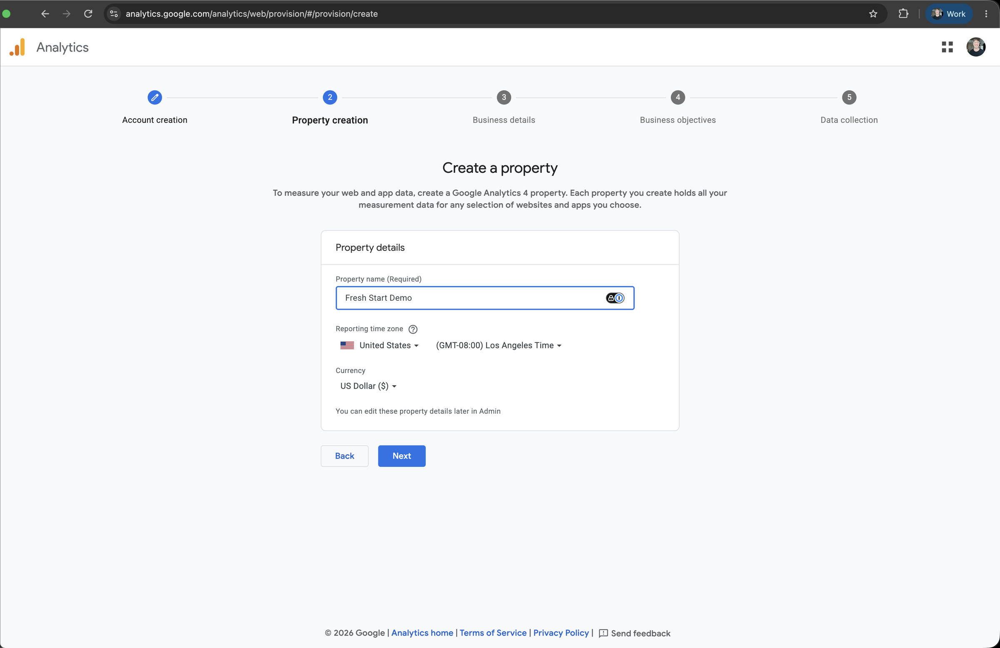
| Setting | What to choose | Why it matters | Change later? |
|---|---|---|---|
| Account name | Your business name | You'll see it on every screen | Yes, Admin → Account settings |
| Data sharing | Leave the defaults | Doesn't change your reports | Yes, Admin → Account settings |
| Property name | Your site or business name | It's where your reports live | Yes, Admin → Property details |
| Time zone | Where your business operates | Decides when a "day" starts, so weekly numbers line up with your week | Yes; applies going forward |
| Currency | Your currency | Used for any money values later | Yes; applies going forward |
Go to analytics.google.com. First time? Click Start measuring, and you'll begin at Account creation. Already have an account? Admin (gear, bottom left) → Create → Property.
SET UP GA4 · 2 OF 7
Pick the closest industry
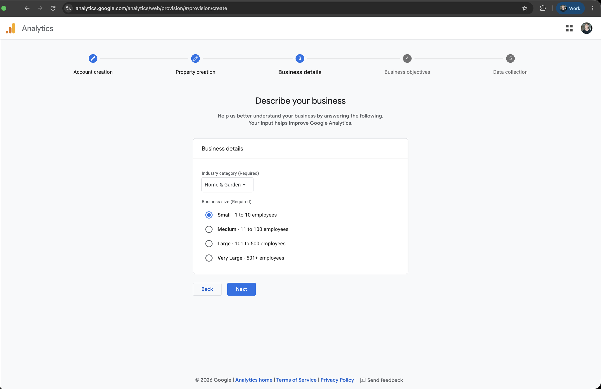
01There's no "Services"
Pick the closest match. Home services → Home & Garden.
02It's only for benchmarks
Industry and size don't change what GA4 tracks.
03Change it anytime
Admin → Property details.
SET UP GA4 · 3 OF 7
Pick two objectives
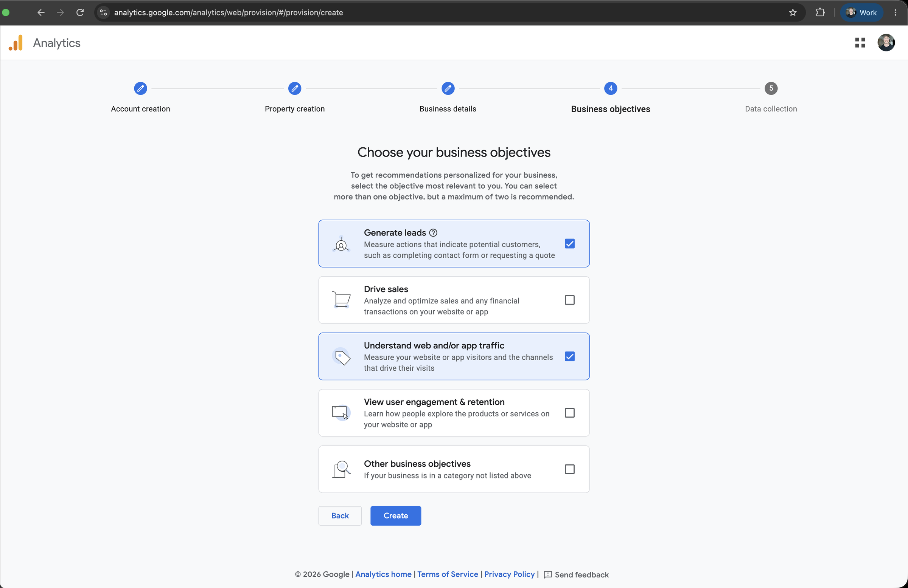
01Service business
Generate leads + Understand web and/or app traffic.
02Online store with checkout on your site
Drive sales + Understand traffic.
03What it changes
Only which reports show first in the menu. GA4 collects the same data either way. Add reports later in Reports → Library.
Which action makes you money, and do you want to know where visitors come from?
Watch out for:
Checking all five. Google recommends one or two.
SET UP GA4 · 4 OF 7
Accept the terms, then choose Web
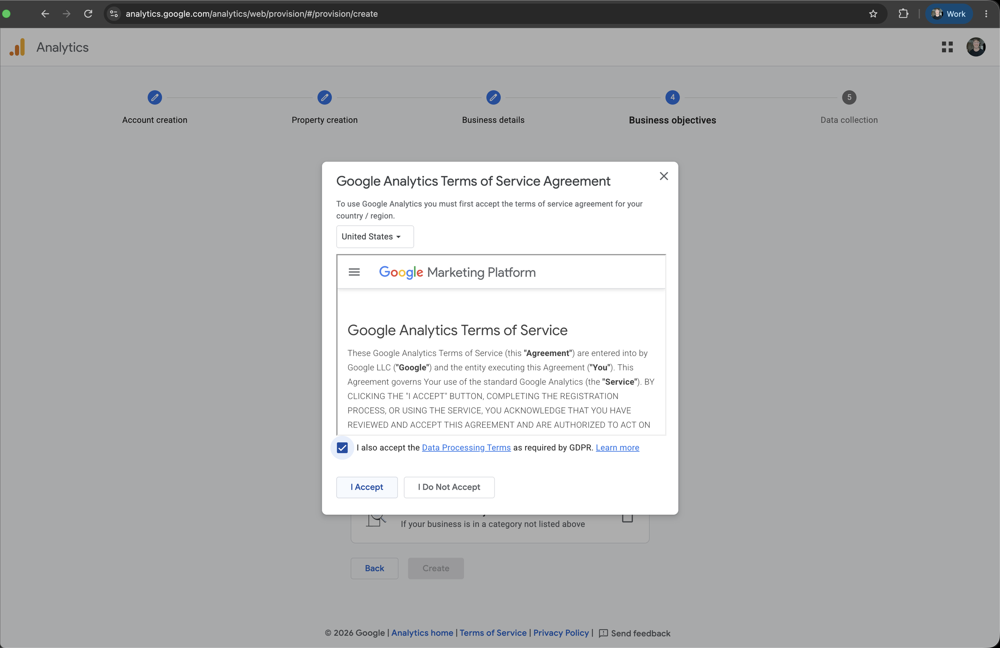
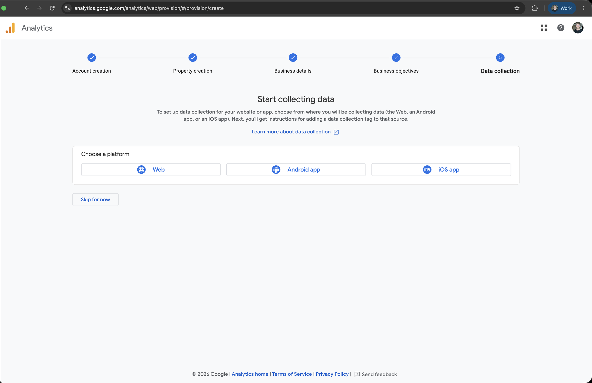
Accept both the Terms and the Data Processing Terms (required to use GA4). Bolt.new projects are websites, so choose Web.
SET UP GA4 · 5 OF 7
Set up your data stream
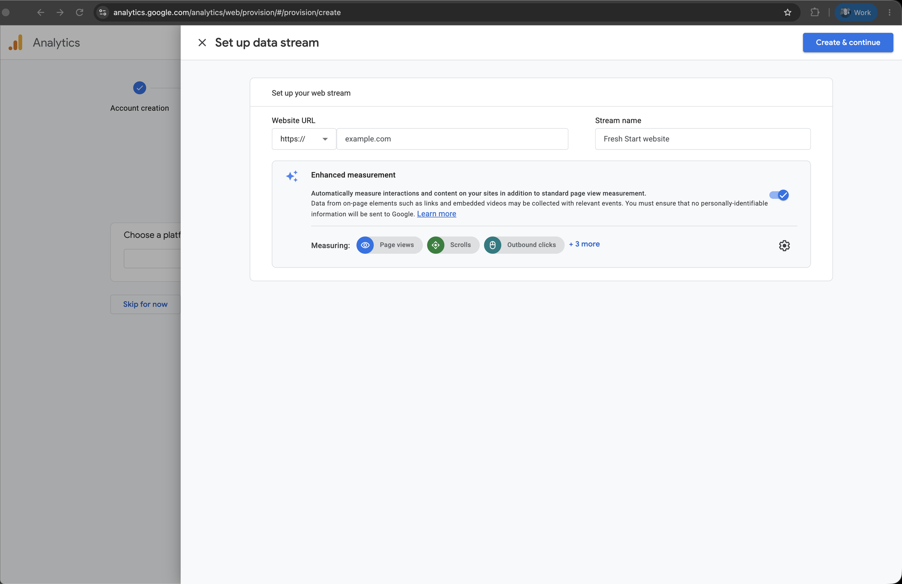
01Website URL
Your published Bolt.new address. It's a label; tracking runs on the Measurement ID. Edit it later with the pencil icon. Find it in Bolt.new → Publish → copy the address.
02Stream name
Anything you'll recognize, like "My website."
03Enhanced measurement
Leave it on. It tracks page views, scrolls, outbound clicks, site search, videos and downloads with no code.
Before clicking Create & continue, click the gear icon. Next slide.
SET UP GA4 · 6 OF 7
Two settings that matter for Bolt.new sites
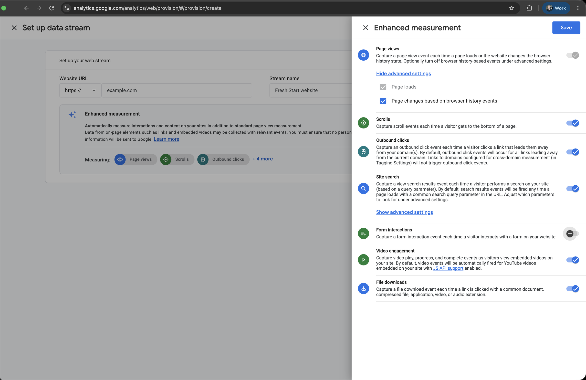
01Keep "Page changes based on browser history events" checked
Bolt.new sites switch pages without reloading. This helps count each page.
02Turn Form interactions off
It guesses at activity on every form. We'll send one precise booking event instead, so leaving it on doubles up.
03Save
Then click Create & continue.
SET UP GA4 · 7 OF 7
Copy your Measurement ID. Skip the code.
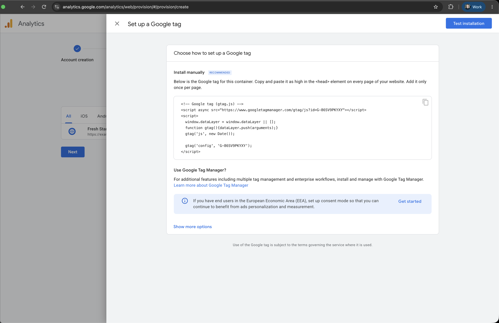
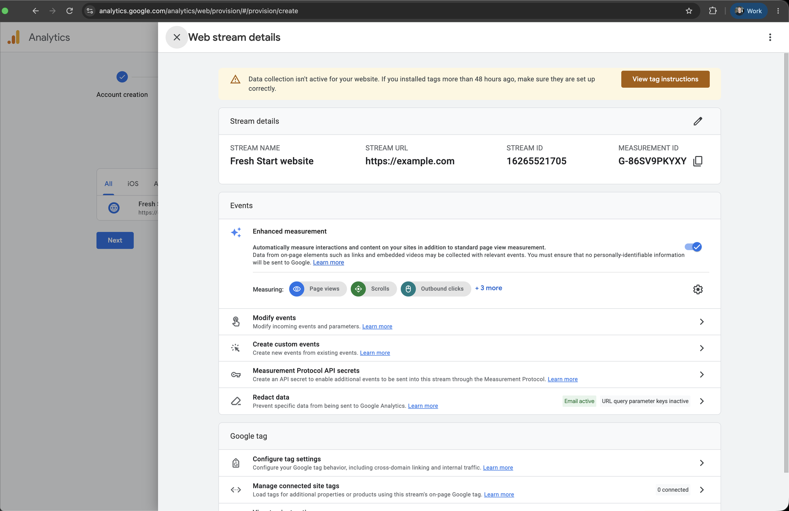
Watch out for:
Retyping the ID. Use the copy icon; a typo sends data nowhere.
"Data collection isn't active" is normal until the tag is on your site.
SET UP GA4 · EXTRA
Leave Google signals off
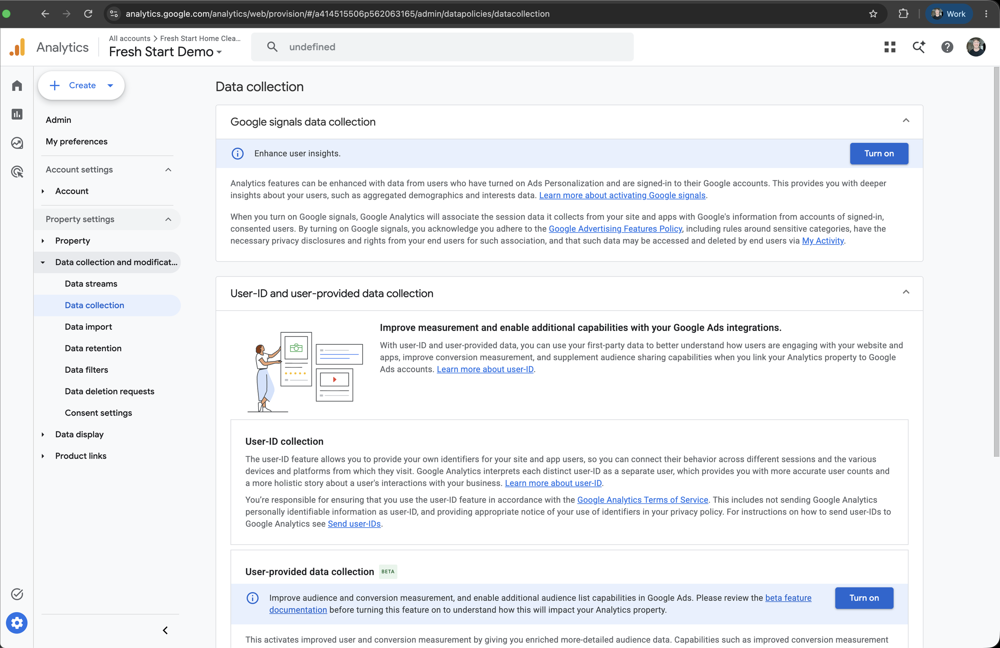
01What it is
Adds demographics from visitors signed in to Google.
02Why off
With small-business traffic, GA4 hides numbers to protect privacy, and it adds privacy-notice duties.
03Where
Admin → Data collection and modification → Data collection.
INSTALL · SAFETY NET
Bookmark a version before you prompt
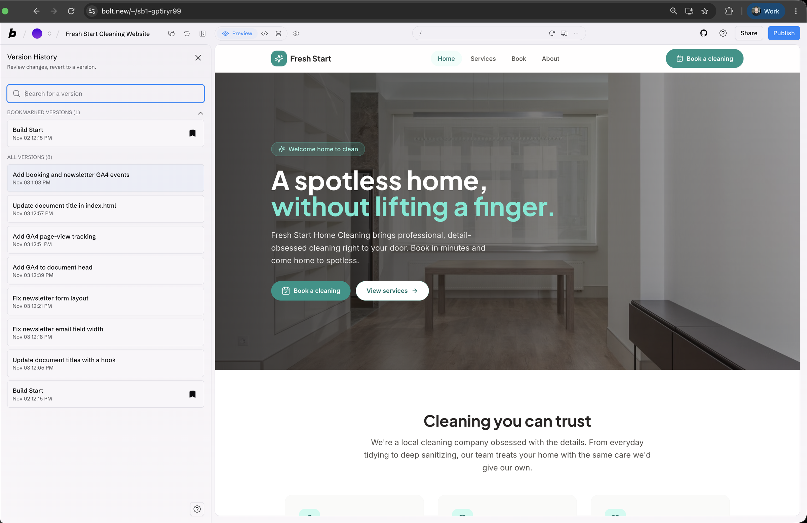
01Open version history
The clock icon at the top of Bolt.new.
02Bookmark a good version
Before any tracking prompt, click the bookmark icon next to your current version.
03Roll back in one click
If a prompt breaks something.
INSTALL · PROMPT 1 OF 3
One prompt installs GA4
Add Google Analytics 4 to this site with Measurement ID G-XXXXXXXXXX:
1. Put the Google tag (gtag.js) in the <head> of index.html so it loads on every page.
2. Give every page its own browser tab title, and make the <title> in index.html match the home page's title.
3. Check how this site's page links work. If the URLs use a # (like /#/book), send a GA4 page_view each time the visitor moves to a different page, with page_title, page_location (the full URL) and page_path (the part after the #). Send it after the new title is set, once per change. The Google tag already sends the first page view, so never send one on the first page load. If the URLs don't use a #, don't add any page view code.
Don't change anything else. When you're done, tell me which files you changed and whether the site uses # URLs.G-XXXXXXXXXX → your Measurement ID (GA4 → Admin → Data streams → your stream, top right).
Bookmark a version in Bolt.new before any tracking prompt, so rolling back is one click.
INSTALL · CHECK BOLT.NEW'S WORK
Check what Bolt.new did
Make sure Bolt.new:
- Its reply names the files it changed
- Its reply mentions the Google tag and your exact G- ID
- Its reply says whether your site uses # links
Watch out for:
- The Google tag added twice: every visit counts double. Run the check-it prompt (Make Bolt.new show its work) to confirm it appears once.
- Extra page view code on a site without #: every page counts double
- Forgetting Update: nothing reaches the live site until you click Publish → Update
INSTALL · CHECK IT
See yourself in Realtime
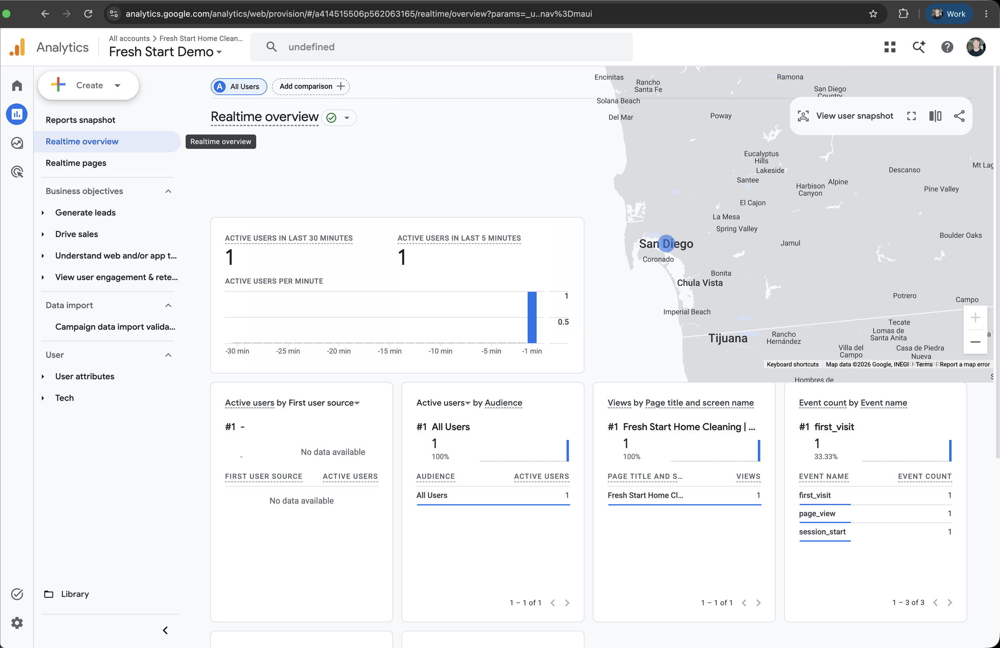
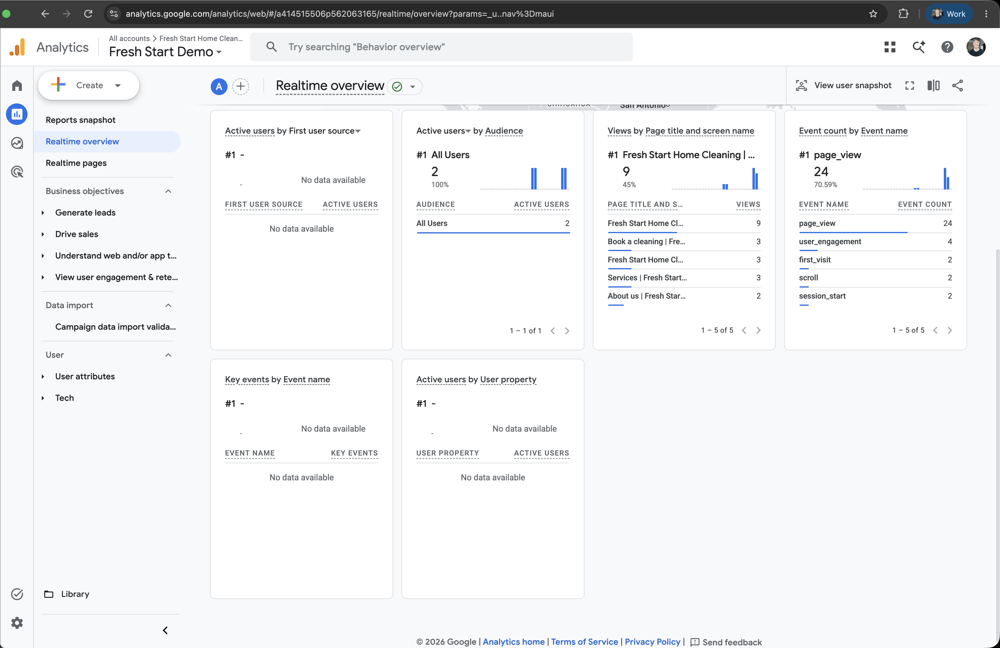
Home shows twice here because this test site's page title didn't match. Step 2 of the install prompt fixes that.
If your site uses # links, the # stays in the address. GA4 now counts the moves; your links don't change.
Watch out for:
Testing in the Bolt.new preview (nothing shows) and ad blockers (they hide your own visits).
INSTALL · IF YOUR SITE USES #
Why # links needed extra help
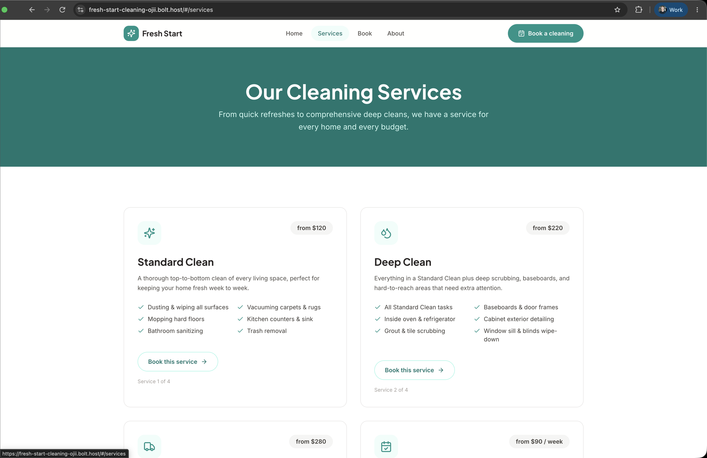
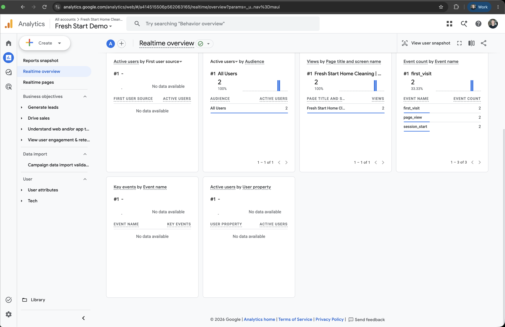
Home shows twice here because this test site's page title didn't match. Step 2 of the install prompt fixes that.
KEY EVENTS
Mark your key events first
Tell GA4 which actions count as conversions now, so it's ready by the time you test. It can take 10+ minutes to start.
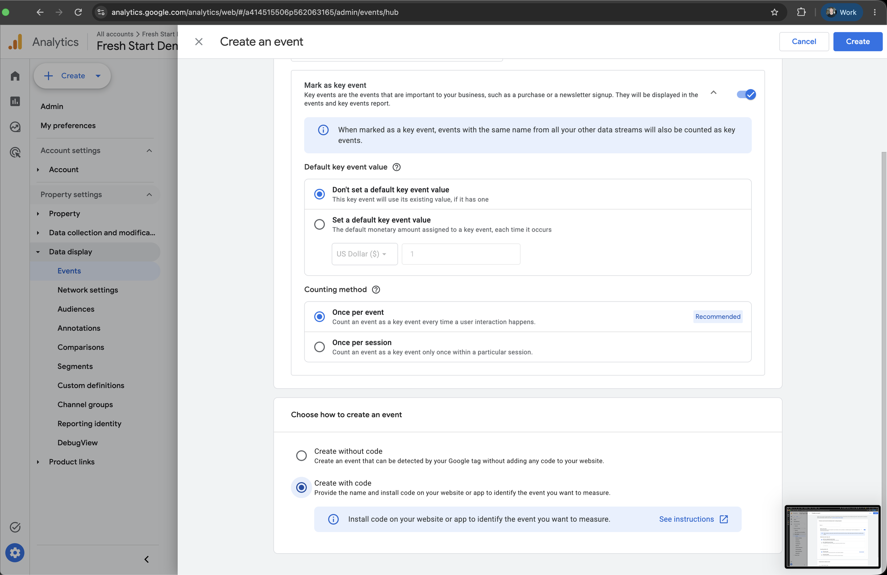
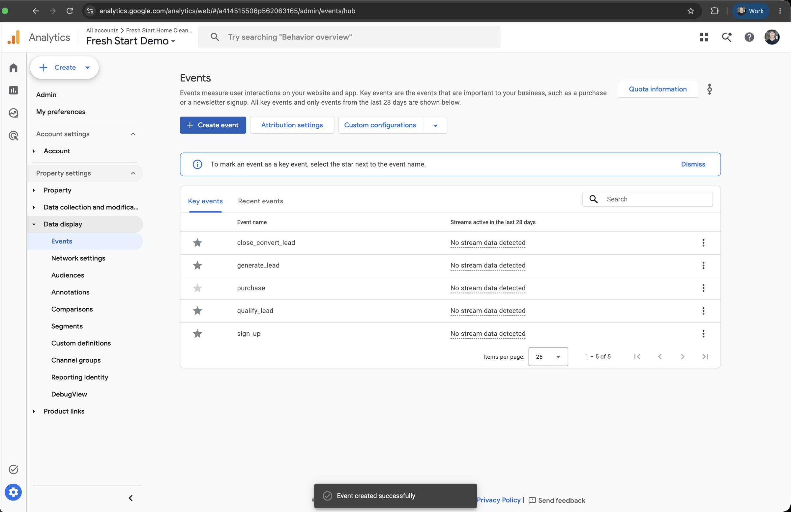
- Admin → Data display → Events → Create event
- Name it exactly
generate_lead(then repeat forsign_up) - Turn on Mark as key event
- Choose Don't set a default key event value
- Leave Counting method on Once per event.
- Under Choose how to create an event, select Create with code → Create
close_convert_lead and qualify_lead appear on their own when you pick the Generate leads objective. They're for sales pipelines and never fire on a simple site. Leave them.
KEY EVENTS · WATCH OUT
Three GA4 traps to avoid
Watch out for:
EVENTS · PROMPT 2 OF 3
Count bookings and sign-ups
Add two GA4 events using gtag:
1. When YOUR BOOKING FORM passes validation and submits successfully, send:
gtag('event', 'generate_lead', { form_name: 'booking', service: <the selected service> })
2. When YOUR SIGN-UP FORM submits successfully, send:
gtag('event', 'sign_up', { method: 'newsletter' })
Send each event once per submission, and never when validation fails. Never include the name, email, phone, or ZIP code in any event. Don't change anything else. Tell me which files you changed.Before you paste: fill in the 2 highlighted blanks
| Blank | Type… | Example |
|---|---|---|
| YOUR BOOKING FORM | Your booking, contact or quote form, and the page it's on | the booking form on the Book page |
| YOUR SIGN-UP FORM | Your newsletter or account sign-up form, and where it is | the newsletter sign-up form in the footer |
If your site doesn't have…
- a service dropdown: delete "
, service: <the selected service>" - a sign-up form: delete step 2
Leave everything else as is. Bolt.new fills in <the selected service> for you.
EVENTS · PROMPT 2 OF 3
What each part of the prompt does
| Part of the prompt | What it does | Why it matters |
|---|---|---|
| "submits successfully" | Names the moment that counts | Clicks on a broken form don't count as bookings |
| generate_lead / sign_up | GA4's recommended names | GA4's built-in reports and Google Ads recognize them |
| { service: … } | Extra detail sent with the event | See which service gets booked most |
| "once per submission, never when validation fails" | Stops double counts and false bookings | Your numbers stay honest |
| "Never include the name, email…" | Keeps personal details out | Google's rules forbid personal info in GA4 |
| "Don't change anything else" | Keeps Bolt.new focused | No surprise edits |
Bolt.new sends the event. GA4's key event setting makes it count as a conversion. You need both.
EVENTS · YOUR OWN SITE
Write your own events prompt
Step 1, match each action to a name
| What the visitor does | Event name | Useful detail |
|---|---|---|
| Books an appointment or service | generate_lead | form_name: 'booking', the service |
| Sends a contact or quote form | generate_lead | form_name: 'contact' or 'quote' |
| Joins a newsletter or waitlist | sign_up | method: 'newsletter' or 'waitlist' |
| Creates an account | sign_up | method: 'email' or 'google' |
| Clicks Buy or Checkout | begin_checkout | the product name (not tested in the demo) |
| Lands on a thank-you page after paying | purchase | value and currency (not tested in the demo) |
EVENTS · YOUR OWN SITE
Fill in the template
Step 2, fill in the template
Add a GA4 event using gtag:
When [the form or button, in plain words, e.g. "the quote form on the Contact page"] [submits successfully / is clicked], send:
gtag('event', '[event name from the table]', { [detail]: [value] })
Send it only after a successful [submit / click], once each time. Never include names, emails, phone numbers, addresses or other personal details. Don't change anything else. Tell me which file you changed.Watch out for:
- Forms from another company (Calendly, Typeform, Jotform): this prompt can't see inside them. Those tools have their own GA4 settings.
- Payment pages on another site (Stripe payment links): track the click as begin_checkout. Counting purchase needs a thank-you page back on your site.
- Made-up names like booking_done: they work, but GA4's built-in reports won't recognize them.
EVENTS · YOUR OWN SITE
Fill in the template (continued)
Example: a quote form
Add a GA4 event using gtag:
When the quote form on the Contact page submits successfully, send:
gtag('event', 'generate_lead', { form_name: 'quote' })
Send it only after a successful submit, once each time. Never include names, emails, phone numbers, addresses or other personal details. Don't change anything else. Tell me which file you changed.Pick one option where the template says "submits successfully / is clicked" and "submit / click". The event name and detail come from the table on the previous slide.
Step 3: Run the check-it prompt. If you added a new event, mark it as a key event now.
CHECK · PROMPT 3 OF 3
Make Bolt.new show its work
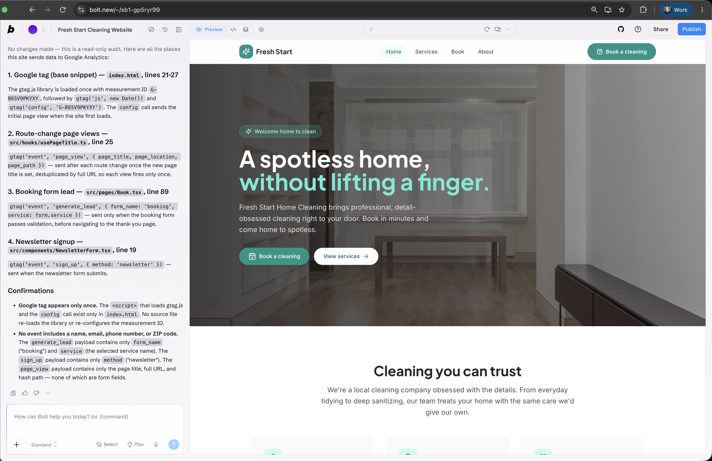
Don't change anything. List every place this site sends data to Google Analytics: the Google tag, any page views and any events. Confirm the Google tag appears only once, and confirm no event includes a name, email, phone number or ZIP code.01A read-only audit
Bolt.new changes nothing; it lists every tracking point with file and line.
02One tag
Confirms the Google tag appears once.
03No personal details
Confirms no event carries names, emails or phone numbers.
Run it after each tracking prompt. No code reading needed.
VERIFY
Is it working?
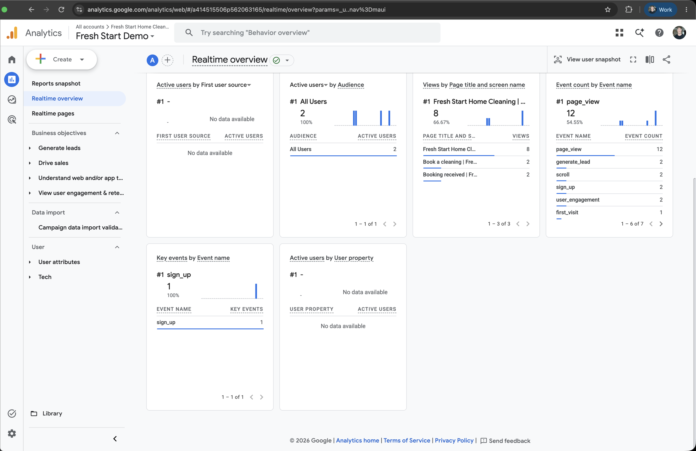
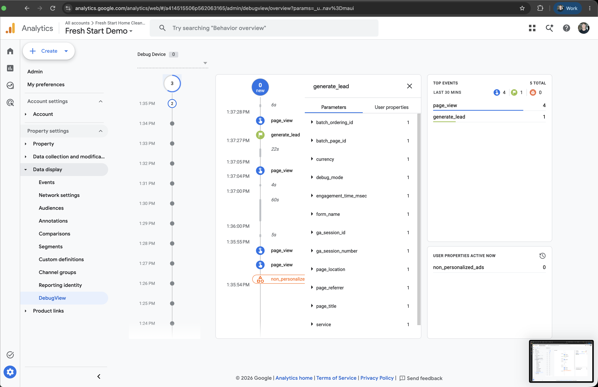
| Symptom | Likely cause | Fix |
|---|---|---|
| No visit in Realtime | Ad blocker or privacy browser | Pause it for your site, or use a clean Chrome window |
| No visit in Realtime | Testing in the Bolt.new preview | Use your published bolt.host address |
| No visit in Realtime | Last change not published | Publish → Update |
| Only the first page appears | Page changes not counted | Run the check-it prompt, then ask Bolt.new to count page changes |
| Key events card is empty | GA4 hasn't started labeling yet | Normal for 10+ minutes; check Event count instead |
| Booking counted when the form has errors | Event sent too early | Ask Bolt.new to send it only after validation passes |
GA4 will always show fewer visitors than Bolt.new. That's normal.
VERIFY · DEBUGVIEW
How to read DebugView
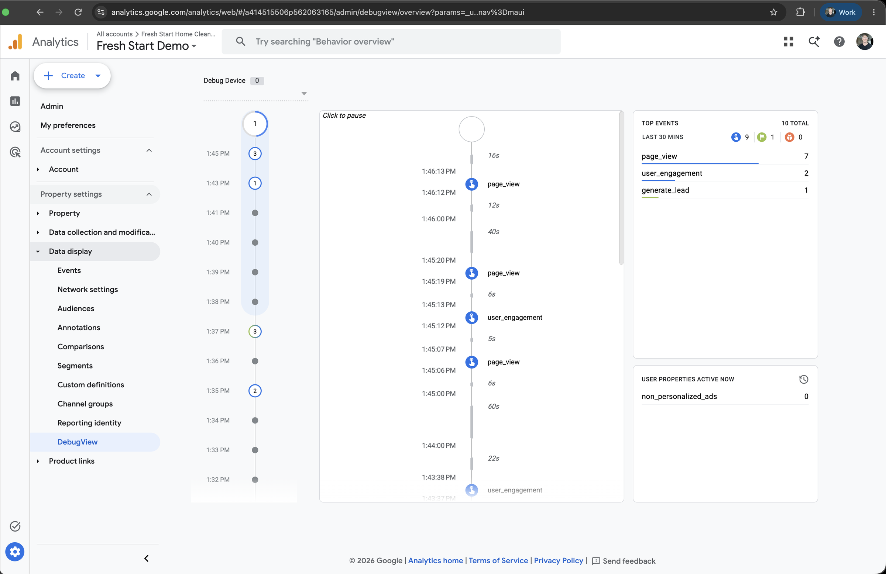
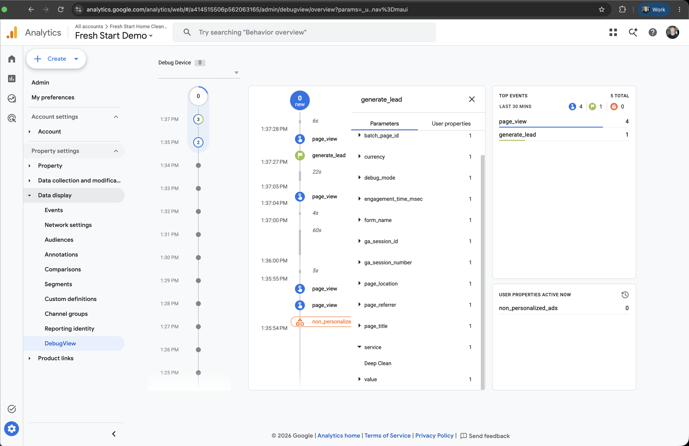
service = Deep Clean, and no personal details.
01Turn it on
tagassistant.google.com → Add domain → paste your site → Connect. Then GA4 → Admin → DebugView.
02Read top down
Newest events are at the top. The left column counts events per minute; the gaps show seconds between events.
03The icons
Blue is an event. A green flag is a key event. user_engagement is automatic; ignore it.
04Click an event
See its details. Click ▸ to see a value. The number on the right counts how many times it was sent, not the value.
TAGGED LINKS
See which posts bring customers
YOUR-SITE.bolt.host/?utm_source=instagram&utm_medium=social&utm_campaign=fall_promo
utm_source= who sent them (instagram, newsletter, google)utm_medium= what kind of channel (social, email, qr)utm_campaign= which promotion (fall_promo, nov_email)
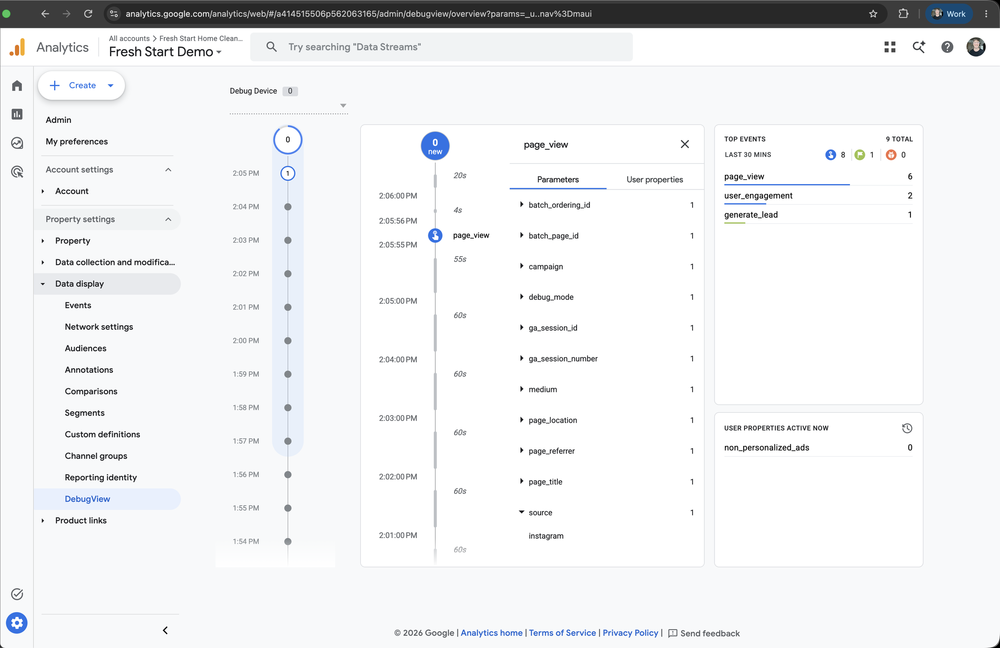
Build links with Google's Campaign URL Builder (search "Campaign URL Builder"). Sources show up in Reports → Acquisition → Traffic acquisition within 24–48 hours.
01You don't give these to Bolt.new
Put them where you share your site: posts, emails, QR codes. The Google tag reads them automatically.
02Test in Incognito
GA4 remembers where your browser first came from. A new Incognito window acts like a new visitor.
03Sites with # links
Check your address bar: if page addresses look like /#/book, your site uses # links. Put the tags before the #: YOUR-SITE.bolt.host/?
TAGGED LINKS · BUILD ONE
Build a tagged link in one minute
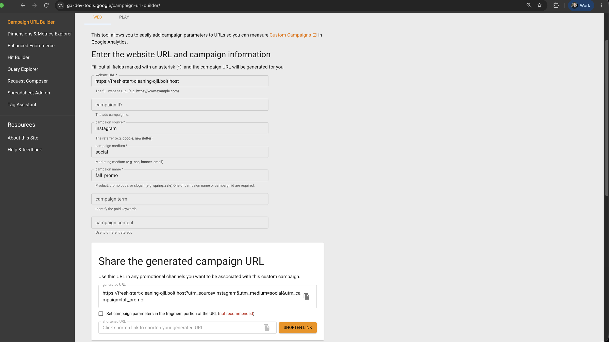
- Go to ga-dev-tools.google/campaign-url-builder (or search "Campaign URL Builder")
- Website URL: your published site. Leave campaign ID, campaign term and campaign content blank.
- Campaign source: where the link lives (instagram, newsletter, flyer)
- Campaign medium: the kind of channel: social, email, or qr for anything printed
- Campaign name: the promotion (fall_promo)
- Copy the link and use it in your post, email or QR code generator
Naming rules
Lowercase, no spaces, same names every time. "Instagram" and "instagram" show up as two different sources.
For QR codes
Build the tagged link first, then paste it into any QR code generator. Every scan is credited to that flyer.
Watch out for:
- Type the promotion into campaign name, not campaign ID (the box right under the URL). If the generated link doesn't include utm_medium and utm_campaign, check those boxes.
- Leave "Set campaign parameters in the fragment portion of the URL" unchecked.
- Don't paste tagged links into Bolt.new's regular chat; it may try to change your site. To have Bolt.new write them, use Plan mode (next slide).
TAGGED LINKS · BUILD ONE
Or let Bolt.new write them
Shortcut: let Bolt.new write them
Switch the chat to Plan mode first, so nothing in your site changes. Then paste:
Before you paste
- Replace YOUR-SITE with your site's address (Bolt.new → Publish → copy the address)
- Change the three places to the ones you actually use: an Instagram bio, a Facebook post, an email, a flyer
Don't change any code. Write tagged links (UTM links) for my site, https://YOUR-SITE.bolt.host, for these places:
- my Instagram bio
- my November email newsletter
- a printed flyer with a QR code
Use utm_source, utm_medium and utm_campaign, all lowercase, no spaces. Use these mediums: social for social media, email for emails, qr for anything printed. If my site's links use a #, put the ?utm part before the #. Give me a table with where each link is used and the full link.Test each link once in an Incognito window before you share it.
TAGGED LINKS · QR AND PRINT
Why your flyer shows as Unassigned
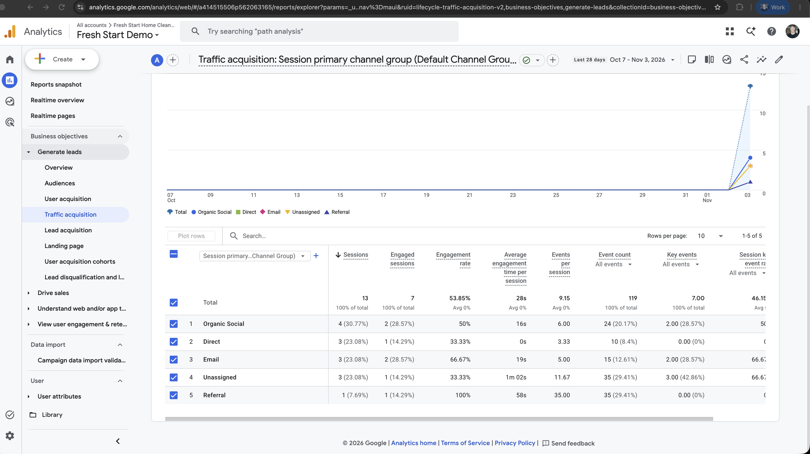
01What happened
GA4 doesn't recognize "qr" as a channel, so channel reports call it Unassigned. Here, it brought the most bookings.
02The quick fix
In Traffic acquisition, switch the first column to Session source / medium. You'll see it as "flyer / qr."
03Optional
Admin → Data display → Channel groups lets you create an "Offline" channel for qr and print. About five minutes.
EVERY MONDAY
The five numbers worth checking
| Number | What it tells you | Where in GA4 |
|---|---|---|
| Visitors (Users) | Is anyone finding the site? | Traffic acquisition |
| Bookings (generate_lead) | How many leads came in | Key events column |
| Booking rate | Share of visits that booked | Session key event rate |
| Bookings by channel | Which posts and ads bring customers | Session source/medium rows |
| Sign-ups (sign_up) | Growth of the list you can market to | Key events column |
Skip for now: bounce rate, average engagement time, total page views and demographics. With small-business traffic they're noisy and rarely change a decision.
EVERY MONDAY
Your Monday-morning check
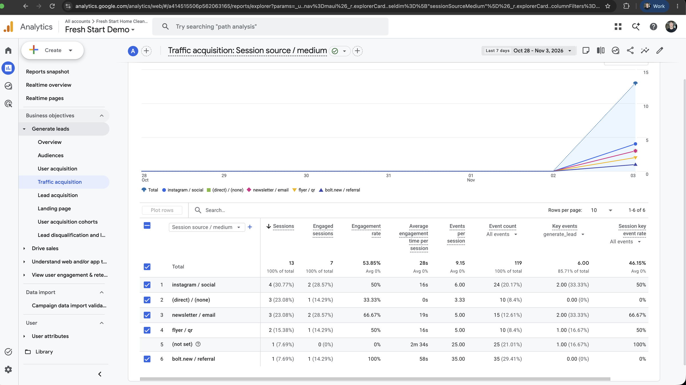
- Reports → Acquisition → Traffic acquisition
- Click the first column's dropdown (Session primary channel group) and choose Session source / medium
- In the Key events column, change All events to generate_lead
- Date range: Last 7 days, with Compare to the previous period
- Bookmark the page
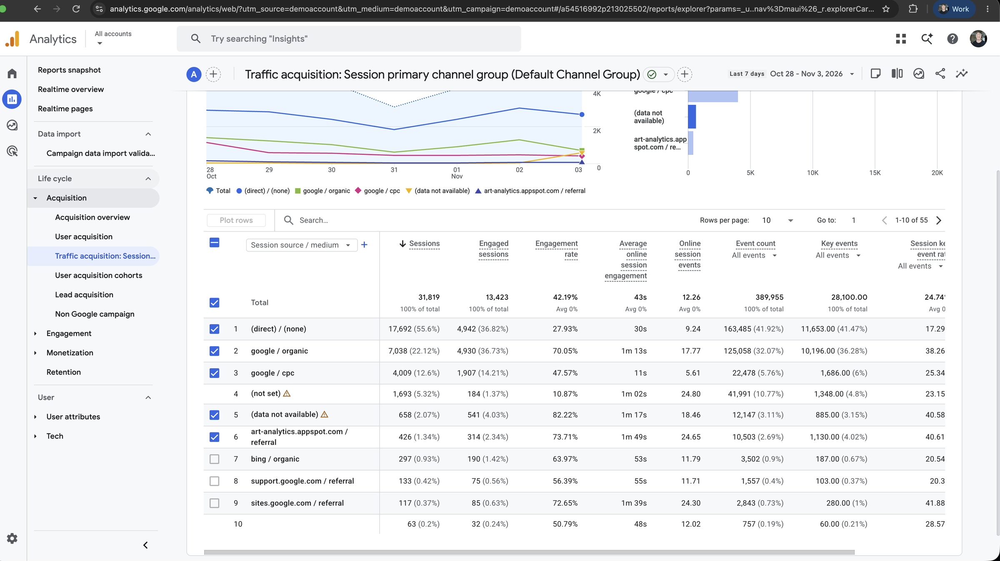
The same report on a site with lots of data: Google's free GA4 demo account (Google Merchandise Store).
Regular reports fill in 24–48 hours after visits. Realtime is for checking your setup, not your weekly numbers.
PRIVACY · NOT LEGAL ADVICE
Privacy in three points
01Never send personal details
Google's rules prohibit names, emails and phone numbers in GA4. The events prompt already leaves them out.
02Say you use analytics
Add a line to your privacy policy that your site uses Google Analytics and cookies.
03Consent depends on where visitors live
Visitors in the EU, the UK and some US states have stronger rights over tracking. If you serve those areas, look into a cookie banner and Google's Consent Mode, or ask a professional.
FAQ
Questions people often ask (1 of 2)
Why does GA4 show fewer visitors than Bolt.new?
Ad blockers hide some visitors from GA4, and Bolt.new also counts bots.
How long until I see data?
Realtime shows visits within seconds. Regular reports take 24–48 hours.
Can I track Stripe payments?
Possibly, if your payment page sends buyers back to a thank-you page on your site. We didn't test that today.
Do I need a cookie banner?
It depends where your visitors live. See the privacy slide.
Can I see who exactly visited?
No. GA4 shows patterns, not people, and you shouldn't send names or emails to it.
FAQ
Questions people often ask (2 of 2)
Where did my visits go?
Realtime only shows the last 30 minutes. Older visits move to your regular reports.
My reports say 0. Is it broken?
New properties take 24–48 hours to fill in. Check Realtime to confirm tracking works.
Why is my QR code traffic "Unassigned"?
GA4 doesn't recognize custom mediums like "qr" as a channel. In Traffic acquisition, switch to Session source/medium to see it as "flyer / qr".
NEXT STEPS